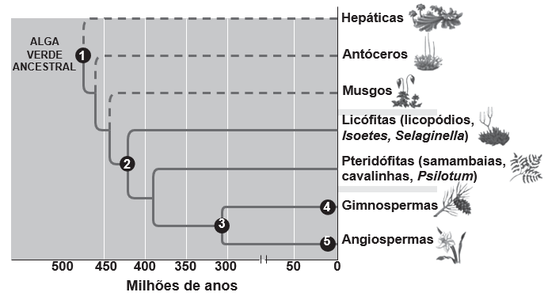

Questão 1:
A maioria das pessoas fica com a visão embaçada ao abrir os olhos debaixo dʼágua. Mas há uma exceção: o povo moken, que habita a costa da Tailândia. Essa característica se deve principalmente à adaptabilidade do olho e à plasticidade do cérebro, o que significa que você também, com algum treinamento, poderia enxergar relativamente bem debaixo dʼágua. Estudos mostraram que as pupilas de olhos de indivíduos moken sofrem redução significativa debaixo dʼágua, o que faz com que os raios luminosos incidam quase paralelamente ao eixo óptico da pupila.
GISLÉN, A. et al. Visual Training Improves Underwater Vision in Children. Vision Research, n. 46, 2006 (adaptado).
A acuidade visual associada à redução das pupilas é fisicamente explicada pela diminuição:
Questão 2:
O "The Kidney Project" é um projeto realizado por cientistas que pretendem desenvolver um rim biônico que executará a maioria das funções biológicas do órgão. O rim biônico possuirá duas partes que incorporam recentes avanços de nanotecnologia, filtração de membrana e biologia celular. Esse projeto significará uma grande melhoria na qualidade de vida para aquelas pessoas que dependem da hemodiálise para sobrevivência.
O dispositivo criado promoverá diretamente a
Questão 3:
Um experimento simples, que pode ser realizado com materiais encontrados em casa, é realizado da seguinte forma: adiciona-se um volume de etanol em um copo de vidro e, em seguida, uma folha de papel. Com o passar do tempo, observa-se um comportamento peculiar: o etanol se desloca sobre a superfície do papel, superando a gravidade que o atrai no sentido oposto, como mostra a imagem. Para parte dos estudantes, isso ocorre por causa da absorção do líquido pelo papel.
Do ponto de vista científico, o que explica o movimento do líquido é a
Questão 4:
Quando se considera a extrema velocidade com que a luz todos os lados e que, quando vêm de diferentes
lugares, mesmo totalmente opostos, [os raios luminosos] se atravessam uns aos outros sem se atrapalharem, compreende-se que, quando vemos um objeto luminoso, isso não poderia ocorrer pelo transporte de uma matéria que venha do objeto até nós, como uma flecha ou bala atravessa o ar; pois certamente isso repugna bastante a essas duas propriedades da luz, principalmente a última.
HUYGENS, C. In: MARTINS, R. A. Tratado sobre a luz, de Cristian Huygens. Caderno de História e Filosofia da Ciência, supl. 4, 1986.
O texto contesta que concepção acerca do comportamento da luz?
Questão 5:
Um dos parâmetros de controle de qualidade de polpas de frutas destinadas ao consumo como bebida é a acidez total expressa em ácido cítrico, que corresponde à massa dessa substância em 100 gramas de polpa de fruta. O ácido cítrico é uma molécula orgânica que apresenta três hidrogênios ionizáveis (ácido triprótico) e massa molar 192g mol−1. O quadro indica o valor mínimo desse parâmetro de qualidade para polpas comerciais de algumas frutas.

A acidez total expressa em ácido cítrico de uma amostra comercial de polpa de fruta foi determinada. No procedimento, adicionou-se água destilada a 2,2 g da amostra e, após a solubilização do ácido cítrico, o sólido remanescente foi filtrado. A solução obtida foi titulada com solução de hidróxido de sódio 0,01 mol L−1, em que se consumiram 24 mL da solução básica (titulante).
BRASIL. Ministério da Agricultura e do Abastecimento. Instrução normativa n. 1, de 7 de janeiro de 2000.
Entre as listadas, a amostra analisada pode ser de qual polpa de fruta?
Questão 6:
Uma cozinheira colocou sal a mais no feijão que estava cozinhando. Para solucionar o problema, ela acrescentou batatas cruas e sem tempero dentro da panela. Quando terminou de cozinhá-lo, as batatas estavam salgadas, porque absorveram parte do caldo com excesso de sal. Finalmente, ela adicionou água para completar o caldo do feijão.
O sal foi absorvido pelas batatas por:
Questão 7:
A agricultura de precisão reúne técnicas agrícolas que consideram particularidades locais do solo ou lavoura a fim de otimizar o uso de recursos. Uma das formas de adquirir informações sobre essas particularidades é a fotografia aérea de baixa altitude realizada por um veículo aéreo não tripulado (vant). Na fase de aquisição é importante determinar o nível de sobreposição entre as fotografias. A figura ilustra como uma sequência de imagens é coletada por um vant e como são formadas as sobreposições frontais.
O operador do vant recebe uma encomenda na qual as imagens devem ter uma sobreposição frontal de 20% em um terreno plano. Para realizar a aquisição das imagens, seleciona uma altitude H fixa de voo de 1 000 m, a uma velocidade constante de 50 ms−1. A abertura da câmera fotográfica do vant é de 90°. Considere tg(45°) = 1.
Natural Resources Canada. Concepts of Aerial Photography. Com que intervalo de tempo o operador deve adquirir duas imagens consecutivas?
Questão 8:
Uma das técnicas de reciclagem química do polímero PET [poli(tereftalato de etileno)] gera o tereftalato de metila e o etanodiol, conforme o esquema de reação, e ocorre por meio de uma reação de transesterificação.
O composto A, representado no esquema de reação, é o
Questão 9:
Durante sua evolução, as plantas apresentaram grande diversidade de características, as quais permitiram sua sobrevivência em diferentes ambientes. Na imagem, cinco dessas características estão indicadas por números.
CAMPBELL, N. et al. Biologia. São Paulo: Artmed, 2010 (adaptado).
A aquisição evolutiva que permitiu a conquista definitiva do ambiente terrestre pelas plantas está indicada pelo número
Questão 10:
Em 1962, um jingle (vinheta musical) criado por Heitor Carillo fez tanto sucesso que extrapolou as fronteiras do rádio e chegou à televisão ilustrado por um desenho animado. Nele, uma pessoa respondia ao fantasma que batia em sua porta, personificando o “frio”, que não o deixaria entrar, pois não abriria a porta e compraria lãs e cobertores para aquecer sua casa. Apesar de memorável, tal comercial televisivo continha incorreções a respeito de conceitos físicos relativos à calorimetria.
DUARTE, M. Jingle é a alma do negócio: livro revela os bastidores das músicas de propagandas.
Para solucionar essas incorreções, deve-se associar à porta e aos cobertores, respectivamente, as funções de: